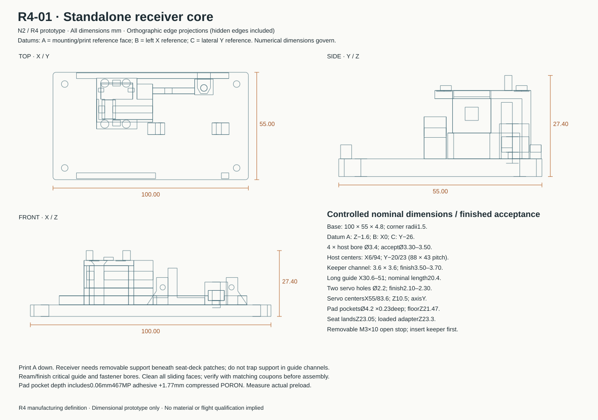
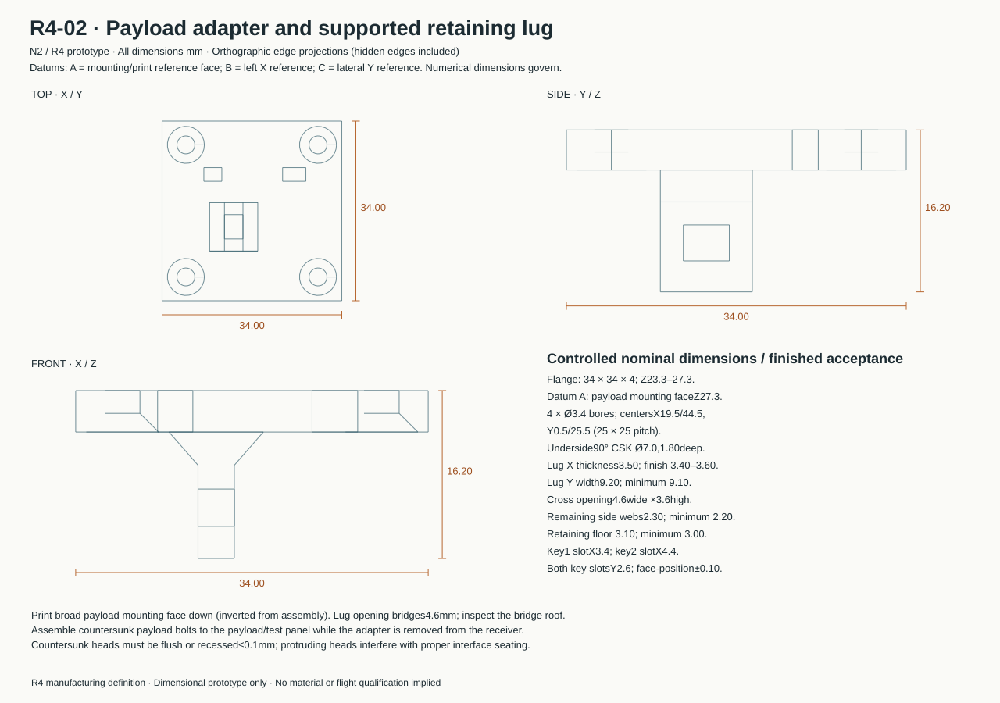
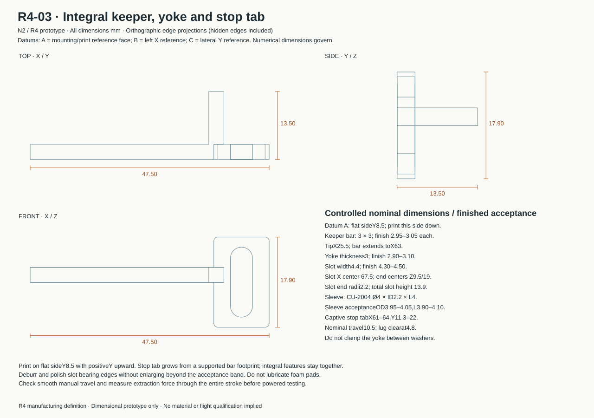

All dimensions are millimetres. Drawings show actual CAD edge projections, including hidden edges. Numeric dimensions and the finished inspection contract govern. This is a prototype definition; no flight rating is assigned.
Bill of materials · Dimensional acceptance · Print recipe · Fit coupons


